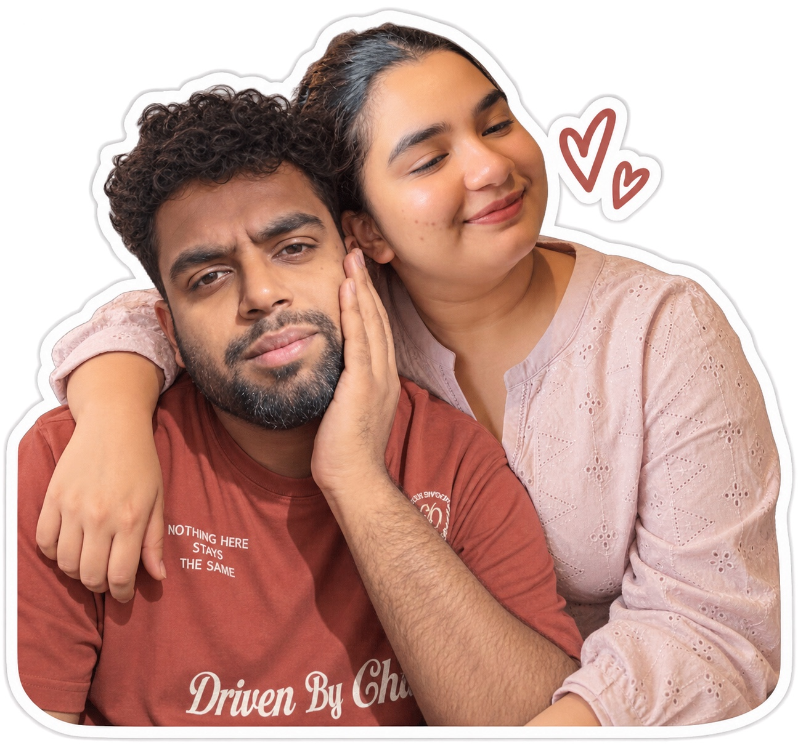
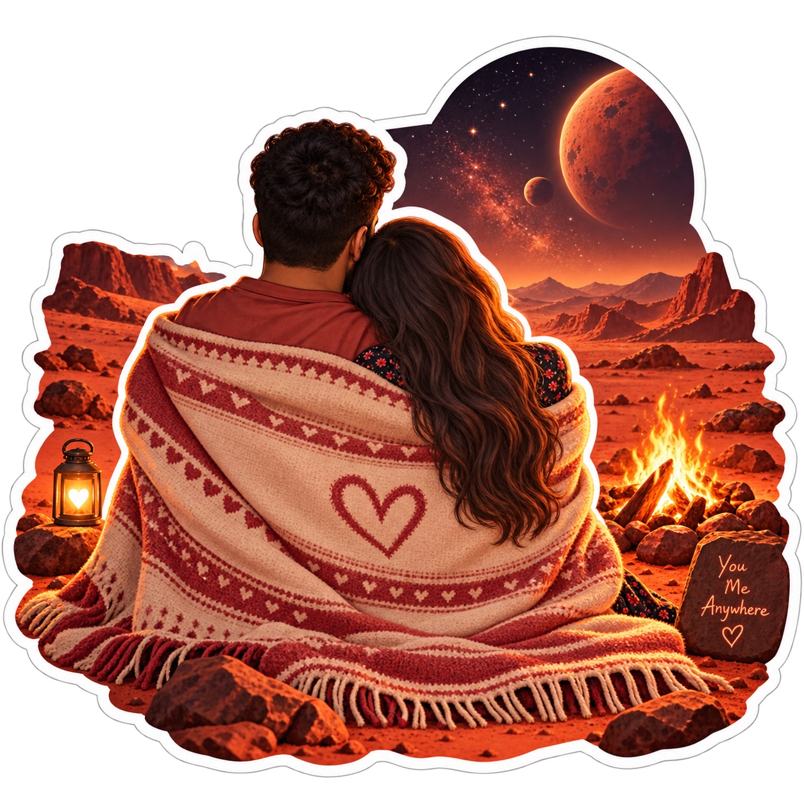
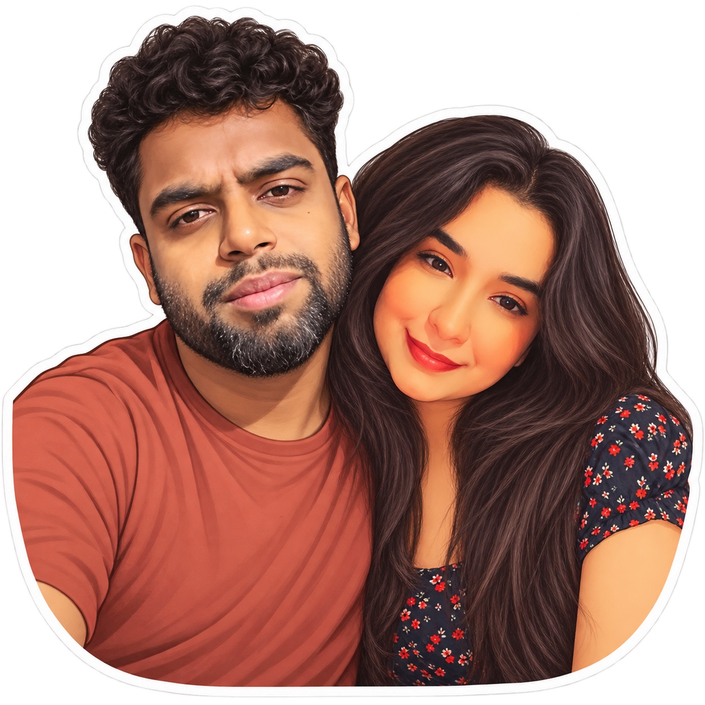

Katieee, I know I was dramatic. I overreacted.
That was on me.
I even spoke to your mum and told her that I didn’t think this would work.
And now I’m sitting here realizing how stupidly certain I was about something
I clearly wasn’t ready to lose.
You not being in my life has left a void I genuinely cannot imagine getting used to.
I know you blocked me on WhatsApp. I tried BOTIM too, and later I was blocked there.
You unfriended me on Snapchat, and we never followed each other on Instagram.
I understand why you reacted the way you did.
But Katieee, if you ever come back to this website and see this message:
please unblock me on WhatsApp and just drop me a text.
Or ring me once on BOTIM. I will call you back.
I’m not asking you to pretend nothing happened.
I’m asking for one more conversation — without the drama, without the ego,
and without either of us throwing away something that mattered because of one bad moment.
And if we come back to each other this time,
let’s stick together for life.
I meant what I said about us. I meant what I imagined for us.
And if you still want me there, I will come down to
Goa in December to meet your family properly.
Maybe this whole mess becomes our canon event.
Maybe years from now we tell our children and grandchildren about the ridiculous time
we broke up, blocked each other everywhere, and I ended up leaving a message for you
on a website because I had finally realized what losing you actually felt like.
I don’t want this to be the end of our story.
So if you ever read this and there is even a little part of you that still wants us,
you know where to find me.
Till I hear from you…
I miss you, Katieee.
Kev.
one more thing
My little Taj Mahal for you.
It hurts to think that these pictures might stay virtual forever.
That all these little versions of us we imagined might be the closest
I ever get to actually standing beside you.
Maybe I’ll never get to see you in real life.
I really hope that isn’t how our story ends.
But whatever happens, I’m going to keep this little corner of the internet
alive for as long as I possibly can.
I built it when you were in my life, and now it holds a piece of everything
I felt for you.
The Taj Mahal was built for someone deeply loved.
I obviously can’t build you one of those… so I built you
katieee.com.
My tiny, slightly ridiculous, digital Taj Mahal.

One of the little versions of us I got to keep.

You. Me. Anywhere.

Maybe virtual. Still precious to me.
For you, my Katieee. ♥ — Kev
update — 46 hours later
I got you back. ❤️
So this page gets to stay — not as the ending of our story, but as proof that
we almost made a very stupid decision. Forty-six hours was enough.
I would really prefer we never run that experiment again.